Temperature is the measure of average molecular kinetic energy within a substance. The concept is easiest to understand for gases under low pressure, where gas molecules randomly shuffle about. The average kinetic (motional) energy of these gas molecules defines temperature for that quantity of gas. There is even a formula expressing the relationship between average kinetic energy (
) and temperature () for a monatomic (single-atom molecule) gas:
Where,
= Average kinetic energy of the gas molecules (joules)
= Boltzmann's constant (1.38 joules/Kelvin)
= Absolute temperature of gas (Kelvin)
Thermal energy is a different concept: the quantity of total kinetic energy for this random molecular motion. If the average kinetic energy is defined as
, then the total kinetic energy for all the molecules in a monatomic gas must be this quantity times the total number of molecules () in the gas sample:
This may be equivalently expressed in terms of the number of moles of gas rather than the number of molecules (a staggeringly large number for any realistic sample):
Where,
= Total thermal energy for a gas sample (joules)
= Quantity of gas in the sample (moles)
= Ideal gas constant (8.315 joules per mole-Kelvin)
= Absolute temperature of gas (Kelvin)
Heat is defined as the exchange of thermal energy from one sample to another, by way of conduction (direct contact), convection (transfer via a moving fluid), or radiation (emitted energy); although you will often find the terms thermal energy and heat used interchangeably.
Illustrating by way of example, a single molecule of gas moving at a constant velocity will have a definite temperature. Two or three molecules moving at the same speed will have the same temperature, but together represent a greater thermal energy than any one of them considered alone. Heat is either the reduction or increase of thermal energy by transfer of energy. If these gas molecules happen to collide with slower-moving gas molecules, the faster molecules will lose velocity while the slower molecules will gain velocity. Thus, the higher-temperature molecules cool down while the lower-temperature molecules warm up: a transfer of heat.
Temperature is a more easily detected quantity than either thermal energy or heat. In fact, when we need to measure either thermal energy or heat, we do so by measuring temperature and then inferring the desired variable based on the laws of thermodynamics.
There are many different ways to measure temperature, from a simple glass-bulb mercury thermometer to sophisticated infrared optical sensor systems. Like all other areas of measurement, there is no single technology that is best for all applications. Each temperature-measurement technique has its own strengths and weaknesses. One responsibility of the instrument technician is to know these pros and cons so as to choose the best technology for the application, and this knowledge is best obtained through understanding the operational principles of each technology.
Solids tend to expand when heated. The amount that a solid sample will expand with increased temperature depends on the size of the sample, the material it is made of, and the amount of temperature rise. The following formula relates linear expansion to temperature change:
Where,
= Length of material after heating
= Original length of material
= Coefficient of linear expansion
= Change in temperature
Here are some typical values of for common metals:
Aluminum = 25 per degree C
Copper = 16.6 per degree C
Iron = 12 per degree C
Tin = 20 per degree C
Titanium = 8.5 per degree C
As you can see, the values for are quite small. This means the amount of expansion (or contraction) for modest temperature changes are almost too small to see unless the sample size () is huge. We can readily see the effects of thermal expansion in structures such as bridges, where expansion joints must be incorporated into the design to prevent serious problems due to changes in ambient temperature. However, for a sample the size of your hand the change in length from a cold day to a warm day will be microscopic.
One way to amplify the motion resulting from thermal expansion is to bond two strips of dissimilar metals together, such as copper and iron. If we were to take two equally-sized strips of copper and iron, lay them side-by-side, and then heat both of them to a higher temperature, we would see the copper strip lengthen slightly more than the iron strip:
If we bond these two strips of metal together, this differential growth will result in a bending motion greatly exceeding the linear expansion. This device is called a bi-metal strip:
This bending motion is significant enough to drive a pointer mechanism, activate an electromechanical switch, or perform any number of other mechanical tasks, making this a very simple and useful primary sensing element for temperature. Older home thermostats often used this principle to both indicate room temperature and to actuate electrical switches for controlling room temperature. Electric hot water heater units still use this type of device (usually in the form of a convex bi-metal disk) to sense over-temperature conditions and automatically shut off power to the heater if the water temperature exceeds a pre-set limit.
If a bi-metallic strip is twisted over a long length, it will tend to un-twist as it heats up. This twisting motion may be used to directly drive the needle of a temperature gauge. This is the operating principle of the temperature gauge shown in the following photograph:
Filled-bulb systems exploit the principle of fluid expansion to measure temperature. If a fluid is enclosed in a sealed system and then heated, the molecules in that fluid will exert a greater pressure on the walls of the enclosing vessel. By measuring this pressure, and/or by allowing the fluid to expand under constant pressure, we may infer the temperature of the fluid.
Class I and Class V systems use a liquid fill fluid (class V is mercury). Here, the volumetric expansion of the liquid drives an indicating mechanism to show temperature:
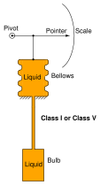
Class III systems use a gas fill fluid instead of liquid. Here, the change in pressure with temperature (as described by the Ideal Gas Law) allows us to sense the bulb's temperature:
In these systems, it is quite critical that the tube connecting the sensing bulb to the indicating element be of minimal volume, so the fluid expansion is primarily due to changes in temperature at the bulb rather than changes in temperature along the length of the tube. It is also important to realize that the fluid volume contained by the bellows (or bourdon tube or diaphragm . . .) is also subject to expansion and contraction due to temperature changes at the indicator. This means the temperature indication varies somewhat as the indicator temperature changes, which is not desirable, since we intend the device to measure temperature (exclusively) at the bulb. Various methods of compensation exist for this effect (for example, a bi-metal spring inside the indicator mechanism to automatically offset the indication as ambient temperature changes), but it may be permanently offset through a simple “zero” adjustment provided that the ambient temperature at the indicator does not change much.
A fundamentally different class of filled-bulb system is the Class II, which uses a volatile liquid/vapor combination to generate a temperature-dependent fluid expansion:
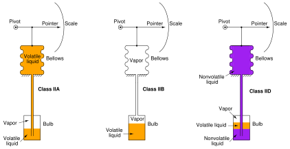
Given that the liquid and vapor are in direct contact with each other, the pressure in the system will be precisely equal to the saturated vapor pressure at the vapor/liquid interface. This makes the Class II system sensitive to temperature only at the bulb and nowhere else along the system's volume. Because of this phenomenon, a Class II filled-bulb system requires no compensation for temperature changes at the indicator.
Class II systems do have one notable idiosyncrasy, though: they have a tendency to switch from Class IIA to Class IIB when the temperature of the sensing bulb crosses the ambient temperature at the indicator. Simply put, the liquid tends to seek the colder portion of a Class II system while the vapor tends to seek the warmer portion. This causes problems when the indicator and sensing bulb exchange identities as warmer/colder. The rush of liquid up (or down) the capillary tubing as the system tries to reach a new equilibrium causes intermittent measurement errors. Class II filled-bulb systems designed to operate in either IIA or IIB mode are classified as IIC.
One calibration problem common to all systems with liquid-filled capillary tubes is an offset in temperature measurement due to hydrostatic pressure (or suction) resulting from a different in height between the measurement bulb and the indicator. This represents a “zero” shift in calibration, which may be permanently offset by a “zero” adjustment at the time of installation. Class III (gas-filled) and Class IIB (vapor-filled) systems, of course, suffer no such problem because there is no liquid in the capillary tube to generate a pressure due to height.
A photograph of a pneumatic temperature transmitter using a filled-bulb as the sensing element appears here:
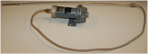
This transmitter happens to be a Moore Products “Nullmatic” model. The capillary tube connecting the fluid-filled bulb to the transmitter mechanism is protected by a spiral-metal jacket. The bulb itself is located at the very end of the stainless steel “wand” which inserts into the process fluid to be measured:
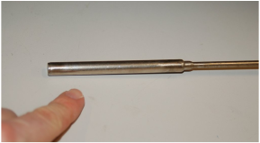
Instead of directly actuating a pointer mechanism, the fluid pressure in this instrument actuates a self-balancing pneumatic mechanism to produce a 3 to 15 PSI air pressure signal representing process temperature.
Filled-bulb temperature sensors are seldom used in industrial applications anymore, chiefly due to the superiority of electrical sensors. The only significant advantage filled-bulb sensors hold over electrical sensors is not needing electricity1.1 to function, but this is usually not a serious consideration within a modern industrial facility.
One of the simplest classes of temperature sensor is one where temperature effects a change in electrical resistance. With this type of primary sensing element, a simple ohmmeter is able to function as a thermometer, interpreting the resistance as a temperature measurement:
Thermistors are devices made of metal oxide which either increase in resistance with increasing temperature (a positive temperature coefficient) or decrease in resistance with increasing temperature (a negative temperature coefficient). RTDs are devices made of pure metal wire (usually platinum or copper) which always increase in resistance with increasing temperature. The major difference between thermistors and RTDs is linearity: thermistors are highly sensitive and nonlinear, whereas RTDs are relatively insensitive but very linear. For this reason, thermistors are typically used where high accuracy is unimportant. Many consumer-grade devices use thermistors for temperature sensors.
A Resistive Temperature Detector (RTD) is a special temperature-sensing element made of fine metal wire, the electrical resistance of which changes with temperature as approximated by the following formula:
Where,
= Resistance of RTD at given temperature (ohms)
= Resistance of RTD at the reference temperature (ohms)
= Temperature coefficient of resistance (ohms per ohm/degree)
The following example shows how to use this formula to calculate the resistance of a “100 ohm” platinum RTD with a temperature coefficient value of 0.00392 at a temperature of 35 degrees Celsius:
Due to nonlinearities in the RTD's behavior, this linear RTD formula is only an approximation. A better approximation is the Callendar-van Dusen formula, which introduces second, third, and fourth-degree terms for a better fit:
for temperatures ranging C 0 C and
for temperatures ranging 0 C 661 C, both assuming = 0 C. The , , and coefficients vary with the specific type of RTD, equivalent in role to in the linear RTD formula.
Water's melting/freezing point is the standard reference temperature for most RTDs. Here are some typical values of for common metals:
Nickel = 0.00672 /C
Tungsten = 0.0045 /C
Silver = 0.0041 /C
Gold = 0.0040 /C
Platinum = 0.00392 /C
Copper = 0.0038 /C
As mentioned previously, platinum is a common wire material for industrial RTD construction. The alpha () value for platinum varies according to the alloying of the metal. For “reference grade” platinum wire, the most common alpha value is 0.003902. Industrial-grade platinum alloy RTD wire is commonly available in two different coefficient values: 0.00385 (the “European” alpha value) and 0.00392 (the “American” alpha value), of which the “European” value of 0.00385 is most commonly used (even in the United States!).
An alternative to mathematically predicting the resistance of an RTD is to simply look up its predicted resistance versus temperature in a table of values published for that RTD type. Tables capture the nuances of an RTD's non-linearity without adding any mathematical complexity: simply look up the resistance corresponding to a given temperature, or vice-versa. If a value falls between two nearest entries in the table, you may interpolate the find the desired value, regarding the two nearest table entries as end-points defining a line segment, calculating the point you desire along that line.
100 is a very common reference resistance ( at 0 degrees Celsius) for industrial RTDs. 1000 is another common reference resistance, and some industrial RTDs have reference resistances as low as 10 . Compared to thermistors with their tens or even hundreds of thousands of ohms' resistance, an RTD's resistance is comparatively small. This can cause problems with measurement, since the wires connecting an RTD to its ohmmeter possess their own resistance, which will be a more substantial percentage of the total circuit resistance than for a thermistor.
The following schematic diagrams show the relative effects of 2 ohms total wire resistance on a thermistor circuit and on an RTD circuit:
As you can see, wire resistance adds to the sensing element's resistance to create a larger total circuit resistance which will be interpreted by the receiving instrument (ohmmeter) as a falsely high temperature reading, assuming a positive temperature coefficient of resistance for the sensing element.
Clearly, wire resistance is more problematic for low-resistance RTDs than for high-resistance thermistors. In the RTD circuit, wire resistance constitutes 1.96% of the total circuit resistance. In the thermistor circuit, the same 2 ohms of wire resistance constitutes only 0.004% of the total circuit resistance. The thermistor's huge reference resistance value “swamps”1.2 the wire resistance to the point that the latter becomes insignificant by comparison.
In HVAC (Heating, Ventilation, and Air Conditioning) systems, where the temperature measurement range is relatively narrow, the nonlinearity of thermistors is not a serious concern and their relative immunity to wire resistance error is a definite advantage over RTDs. In industrial temperature measurement applications where the temperature ranges are usually much wider, the nonlinearity of thermistors becomes a significant problem, so we must find a way to use low-resistance RTDs and deal with the (lesser) problem of wire resistance.
A very old electrical measurement technique known as the Kelvin or four-wire method is a practical solution to the problem of wire resistance. Commonly employed to make precise resistance measurements for scientific experiments in laboratory conditions, the four-wire technique uses four wires to connect the resistance under test (in this case, the RTD) to the measuring instrument, which consists of a voltmeter and a precision current source. Two wires carry “excitation” current to the RTD from the current source while the other two wires merely “sense” voltage drop across the RTD resistor element and carry that voltage signal to the voltmeter. RTD resistance is calculated using Ohm's Law: taking the measured voltage displayed by the voltmeter and dividing that figure by the regulated current value of the current source. A simple 4-wire RTD circuit is shown here for illustration:
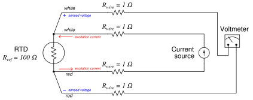
Wire resistances are completely inconsequential in this circuit. The two “excitation” wires carrying current to the RTD will drop some voltage along their length, but this voltage drop is only “seen” by the current source and not the voltmeter. The two “sense” wires connecting the voltmeter to the RTD also possess resistance, but they drop negligible voltage because the voltmeter draws so little current through them1.3. Thus, the resistances of the current-carrying wires are of no effect because the voltmeter never senses their voltage drops, and the resistances of the voltmeter's sensing wires are of no effect because they carry practically zero current.
Note how wire colors (white and red) indicate which wires are common pairs at the RTD. The RTD is polarity-insensitive because it is nothing more than a resistor, which is why it doesn't matter which color is positive and which color is negative.
The only disadvantage of the four-wire method is the sheer number of wires necessary. Four wires per RTD can add up to a sizeable wire count when many different RTDs are installed in a process area.
A compromise between two-wire and four-wire RTD connections is the three-wire connection, which looks like this:
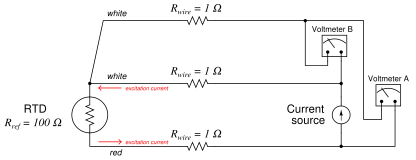
In a three-wire RTD circuit, voltmeter “A” measures the voltage dropped across the RTD plus the voltage dropped across the bottom current-carrying wire. Voltmeter “B” measures just the voltage dropped across the top current-carrying wire. Assuming both current-carrying wires will have (very nearly) the same resistance, subtracting the indication of voltmeter “B” from the indication given by voltmeter “A” yields the voltage dropped across the RTD:
Once again, RTD resistance is calculated from the RTD voltage and the known current source value using Ohm's Law, just as it is in a 4-wire circuit.
If the resistances of the two current-carrying wires are precisely identical (and this includes the electrical resistance of any connections within those current-carrying paths, such as terminal blocks), the calculated RTD voltage will be the same as the true RTD voltage, and no wire-resistance error will appear. If, however, one of those current-carrying wires happens to exhibit more resistance than the other, the calculated RTD voltage will not be the same as the actual RTD voltage, and a measurement error will result.
Thus, we see that the three-wire RTD circuit saves us wire cost over a four-wire circuit, but at the “expense” of a potential measurement error. The beauty of the four-wire design was that wire resistances were completely irrelevant: a true determination of RTD voltage (and therefore RTD resistance) could be made regardless of how much resistance each wire had, or even if the wire resistances were different from each other. The error-canceling property of the three-wire circuit, by contrast, hinges on the assumption that the two current-carrying wires have exactly the same resistance, which may or may not actually be true.
It should be understood that real three-wire RTD instruments do not employ direct-indicating voltmeters as shown in these simplified examples. Actual RTD instruments use either analog or digital “conditioning” circuits to measure the voltage drops and perform the necessary calculations to compensate for wire resistance. The voltmeters shown in the four-wire and three-wire diagrams serve only to illustrate the basic concepts, not to showcase practical instrument designs.
A practical electronic circuit for a 3-wire RTD sensor is shown here (differential voltages shown in blue, ground-referenced voltages shown in red):
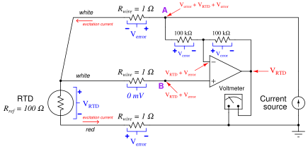
Note that the voltage appearing at point B with reference to ground is the RTD's voltage plus the voltage dropped by the lower current-carrying wire:
. It is this “error” voltage we must eliminate in order to achieve an accurate measurement of RTD voltage drop, essential for accurately inferring RTD temperature. The voltage appearing at point A is greater by the upper wire's voltage drop (
) because that point spans one more wire resistance in the circuit than point B1.4.
Like all negative-feedback operational amplifier circuits, the amplifier does its best to maintain the two input terminals at (nearly) the same voltage. Thus, the voltage at point B is duplicated at the inverting input terminal by the amplifier's feedback action. From this we may see that the voltage drop across the left-hand 100 k resistor is simply : the potential difference between point A and point B. The feedback current driving through this resistor goes through the other 100 k feedback resistor equally, causing the same voltage drop to appear there (). We may see that the polarity of this second resistor's voltage drop ends up subtracting that quantity from the voltage appearing at the inverting input terminal. The inverting terminal voltage (
) minus the right-hand 100 k resistor's voltage drop () is simply , and so the voltmeter registers the true RTD voltage drop without any wire resistance error.
Like the dual-voltmeter circuit shown previously, this amplified 3-wire RTD sensing circuit “assumes” the two current-carrying wires will have the exact same resistance and therefore drop the same amount of voltage. If this is not the case, and one of these wires drops more voltage than the other, the circuit will fail to yield the exact RTD voltage () at the amplifier output. This is the fundamental limitation of any 3-wire RTD circuit: the cancellation of wire resistance is only as good as the wires' resistances are precisely equal to each other.
A photograph of a modern temperature transmitter capable of receiving input from 2-wire, 3-wire, or 4-wire RTDs (as well as thermocouples, another type of temperature sensor entirely) shows the connection points and the labeling describing how the sensor is to be connected to the appropriate terminals:
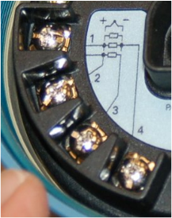
The rectangle symbol shown on the label represents the resistive element of the RTD. The symbol with the “+” and “” marks represents a thermocouple junction, and may be ignored for the purposes of this discussion. As shown by the diagram, a two-wire RTD would connect between terminals 2 and 3. Likewise, a three-wire RTD would connect to terminals 1, 2, and 3 (with terminals 1 and 2 being the points of connection for the two common wires of the RTD). Finally, a four-wire RTD would connect to terminals 1, 2, 3, and 4 (terminals 1 and 2 being common, and terminals 3 and 4 being common, at the RTD).
Once the RTD has been connected to the appropriate terminals of the temperature transmitter, the transmitter needs to be electronically configured for that type of RTD. In the case of this particular temperature transmitter, the configuration is performed using a “smart” communicator device using the HART digital protocol to access the transmitter's microprocessor-based settings. Here, the technician would configure the transmitter for 2-wire, 3-wire, or 4-wire RTD connection.
Proper connections for all three types of RTD sensor (2-wire, 3-wire, and 4-wire) to a user-configurable transmitter are shown in the following illustrations:
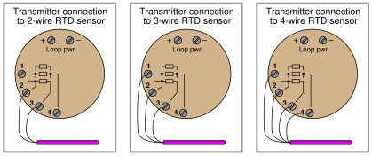
It is critically important to note that the common connections shown by the symbols for 3- and 4-wire RTD sensors represent junction points at the sensor; not terminals jumpered by the technician at the time of installation, and not internal jumpers inside the transmitter. The whole purpose of having 3-wire and 4-wire RTD circuits is to eliminate errors due to voltage drop along the current-carrying wires, and this can only be realized if the “sensing” wire(s) extend out to the RTD itself and connect there. If the transmitter's sensing terminal(s) are only jumpered to a current-carrying terminal, the transmitter will sense voltage dropped by the RTD plus voltage dropped by the current-carrying wire(s), leading to falsely high temperature indications.
Misconceptions surrounding proper RTD connections unfortunately abound both in students and in working industry professionals. With any luck, the following presentation will help you avoid such mistakes, and more importantly help you understand why the correct connections are best.
Always bear in mind the purpose of a 3-wire or a 4-wire RTD connection: to avoid inaccuracies caused by voltage drops along the current-carrying wires. The only way to do this is to ensure the sensing (non-current-carrying) wire(s) extend from the transmitter terminal(s) all the way to the sensor itself. This way, the transmitter is able to “look past” the voltage drops of the current-carrying wires to “see” the voltage dropped only by the RTD itself.
The following illustrations show both correct and incorrect ways to connect a 2-wire RTD to a 3- or 4-wire transmitter:
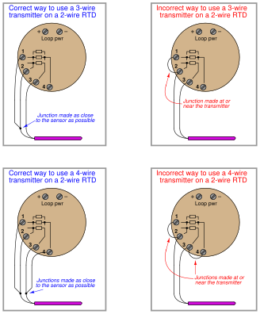
Jumpers placed at the transmitter terminals defeat the purpose of the transmitter's 3-wire or 4-wire capabilities, downgrading its performance to that of a 2-wire system.
A similar problem occurs when someone tries to connect a 3-wire RTD to a 3-wire transmitter using a conveniently available 4-wire cable:
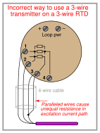
3-wire RTD measurement is based on the assumption that both current-carrying wires have exactly the same electrical resistance. By paralleling two of the four wires in the 4-wire cable, you will create unequal resistances in the current path, thus leading to measurement errors at the transmitter1.5.
Better solutions for the 3-wire RTD and 4-wire cable scenario include configuring the transmitter for 4-wire RTD input and actually using all four terminals (shown on left), or keeping the transmitter configured for 3-wire RTD input and not using the fourth wire in the cable at all (shown on right):
One problem inherent to both thermistors and RTDs is self-heating. In order to measure the resistance of either device, we must pass an electric current through it. Unfortunately, this results in the generation of heat at the resistance according to Joule's Law:
This dissipated power causes the thermistor or RTD to increase in temperature beyond its surrounding environment, introducing a positive measurement error. The effect may be minimized by limiting excitation current to a bare minimum, but this results in less voltage dropped across the device. The smaller the developed voltage, the more sensitive the voltage-measuring instrument must be to accurately sense the condition of the resistive element. Furthermore, a decreased signal voltage means we will have a decreased signal-to-noise ratio, for any given amount of noise induced in the circuit from external sources.
One clever way to circumvent the self-heating problem without diminishing excitation current to the point of uselessness is to pulse current through the resistive sensor and digitally sample the voltage only during those brief time periods while the thermistor or RTD is powered. This technique works well when we are able to tolerate slow sample rates from our temperature instrument, which is often the case because most temperature measurement applications are slow-changing by nature. The pulsed-current technique enjoys the further advantage of reducing power consumption for the instrument, an important factor in battery-powered temperature measurement applications.
RTDs are completely passive sensing elements, requiring the application of an externally-sourced electric current in order to function as temperature sensors. Thermocouples, however, generate their own electric potential. In some ways, this makes thermocouple systems simpler because the device receiving the thermocouple's signal does not have to supply electric power to the thermocouple. It also makes thermocouple systems potentially safer than RTDs in applications where explosive compounds may exist in the atmosphere, because the power levels generated by a thermocouple tend to be less than the power levels dissipated by an RTD. The self-powering nature of thermocouples also means they do not suffer from the same “self-heating” effect as RTDs.
In other ways, however, thermocouple circuits are more complex and troublesome than RTD circuits because the generation of voltage actually occurs in two different locations within the circuit, not simply at the sensing point. This means the receiving circuit must “compensate” for temperature in another location in order to accurately measure temperature in the desired location.
Though typically not as accurate as RTDs, thermocouples are more rugged, have greater temperature measurement spans, and are easier to manufacture in different physical forms.
When two dissimilar metal wires are joined together at one end, a voltage is produced at the other end that is approximately proportional to temperature. That is to say, the junction of two different metals behaves like a temperature-sensitive battery. This form of electrical temperature sensor is called a thermocouple:
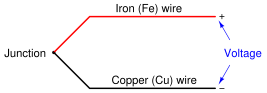
This phenomenon provides us with a simple way to electrically infer temperature: simply measure the voltage produced by the junction, and you can tell the temperature of that junction. And it would be that simple, if it were not for an unavoidable consequence of electric circuits: when we connect any kind of electrical instrument to the thermocouple wires, we inevitably produce another junction of dissimilar metals. The following schematic shows this fact, where the iron-copper junction is necessarily complemented by a second iron-copper junction of opposing polarity:
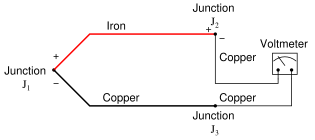
Junction is a junction of iron and copper – two dissimilar metals – which will generate a voltage related to temperature. Note that junction , which is necessary for the simple fact that we must somehow connect our copper-wired voltmeter to the iron wire, is also a dissimilar-metal junction which will also generate a voltage related to temperature. Further note how the polarity of junction stands opposed to the polarity of junction (iron = positive ; copper = negative). A third junction () also exists between wires, but it is of no consequence because it is a junction of two identical metals which does not generate a temperature-dependent voltage at all.
The presence of this second voltage-generating junction () helps explain why the voltmeter registers 0 volts when the entire system is at room temperature: any voltage generated by the iron-copper junctions will be equal in magnitude and opposite in polarity, resulting in a net (series-total) voltage of zero. Only when the two junctions and are at different temperatures will the voltmeter register any voltage at all.
We may express this relationship mathematically as follows:
With the measurement () and reference () junction voltages opposed to each other, the voltmeter only “sees” the difference between these two voltages.
Thus, thermocouple systems are fundamentally differential temperature sensors. That is, they provide an electrical output proportional to the difference in temperature between two different points. For this reason, the wire junction we use to measure the temperature of interest is called the measurement junction while the other junction (which we cannot eliminate from the circuit) is called the reference junction (or the cold junction, because it is typically at a cooler temperature than the process measurement junction).
Much of the complexity of thermocouples is related to the reference junction voltage and how we must deal with that (unwanted) potential when using a thermocouple as a measuring device. For most practical applications, we just want to measure the temperature at one location, not the difference in temperature between two locations which is what a thermocouple naturally does. A number of different techniques exist to deal with this problem – forcing a differential temperature sensor to act like a single-point temperature sensor – and we will explore the most common techniques in this section.
Students and working professionals alike often find this concept of a reference junction and its effects endlessly confusing. My advice to the confused is to return to the simple iron-copper wire circuit shown previously as a “starting point,” and then deduce its behavior from first principles1.6. We know that a dissimilar-metal junction creates a voltage with temperature. We also know that in order to make a complete circuit with iron and copper wire there must be a second iron-copper junction somewhere else in that same circuit, the polarity of which is necessarily opposed to the first. If we call the first iron-copper junction and the second junction , we absolutely must conclude that the net voltage registered by the voltmeter in this circuit will be
.
All thermocouple circuits – no matter how simple or complex – exhibit this fundamental property. Mentally constructing a simple circuit of two dissimilar-metal wires and then performing “thought experiments” to see how that circuit will behave with those junctions at the same temperature and also at different temperatures is the best way I can suggest for any person to comprehend thermocouples. Students especially tend to cope with complexity through memorization: committing to memory catch-phrases and formulae such as
. This is a poor coping mechanism, as it grants the illusion of understanding with none of the substance. The real secret is to know why a thermocouple circuit acts as it does, and that only comes through practiced reasoning. Throughout the rest of this section, as we explore reference junction compensation, how to interpret voltage measurements in thermocouple circuits, and how to simulate thermocouples at temperature, we will keep returning to this simple iron-copper wire circuit to refresh our understanding of how and why thermocouple circuits behave. If you understand this one fundamental concept, the rest will make sense to you. If you continually find yourself confused by thermocouple circuits, it means you do not yet fully understand this basic circuit, and you need to return to it and think it through until you do.
Thermocouples exist in many different types, each with its own color codes for the dissimilar-metal wires. Here is a table showing the more common thermocouple types and their standardized colors1.7, along with some distinguishing characteristics of the metal types to aid in polarity identification when the wire colors are not clearly visible:
Types S and B use platinum or platinum-rhodium alloy wire, with different alloying distinguishing the positive from the negative wires. Sometimes type B is colored green and red rather than grey and red.
Note how the negative () wire of every thermocouple type is color-coded red. While this may seem backward to those familiar with modern electronics (where red and black usually represent the positive and negative poles of a DC power supply, respectively), bear in mind that thermocouple color codes actually pre-date electronic power supply wire coloring!
Aside from having different usable temperature ranges, these thermocouple types also differ in terms of the atmospheres they may withstand at elevated temperatures. Type J thermocouples, for instance, by virtue of the fact that one of the wire types is iron, will rapidly corrode in any oxidizing1.8 atmosphere. Type K thermocouples are attacked by reducing1.9 atmospheres as well as sulfur and cyanide. Type T thermocouples are limited in upper temperature by the oxidation of copper (a very reactive metal when hot), but stand up to both oxidizing and reducing atmospheres quite well at lower temperatures, even when wet.
One final note on the thermocouple types shown in this table is that the temperature ranges given are approximate, and vary with the intended measurement accuracy. One may have to stay within a more limited range of temperature than what is shown in this table if a certain minimum level of accuracy is desired from the thermocouple. Consult manufacturers' data for details!
In its simplest form, a thermocouple is nothing more than a pair of dissimilar-metal wires joined together. However, in industrial practice, we often must package thermocouples in a more rugged form than a bare metal junction. For instance, most industrial thermocouples are manufactured in such a way that the dissimilar-metal wires are protected from physical damage by a stainless steel or ceramic sheath, and they are often equipped with molded-plastic plugs for quick connection to and disconnection from a thermocouple-based instrument.
A photograph of a type K industrial thermocouple (approximately 20 inches in length) reveals this “sheathed” and “connectorized” construction:
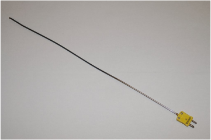
The stainless steel sheath of this particular thermocouple shows signs of discoloration from previous service in a hot process. Note the different diameters of the plug terminals. This “polarized” design makes it difficult1.10 to insert backward into a matching socket.
A miniature version of this same plug (designed to attach to thermocouple wire by screw terminals, rather than be molded onto the end of a sheathed assembly) is shown here, situated next to a ballpoint pen for size comparison:
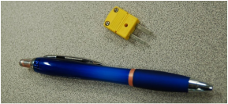
Industrial-grade thermocouples are available with this miniature style of molded plug end as an alternative to the larger (standard) plug. Miniature plug-ends are often the preferred choice for laboratory applications, while standard-sized plugs are often the preferred choice for field applications.
Some industrial thermocouples have no molded plug at all, but terminate simply in a pair of open wire ends. The following photograph shows a type J thermocouple of this construction:
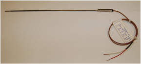
If the electronic measuring instrument (e.g. temperature transmitter) is located near enough for the thermocouple's wires to reach the connection terminals, no plug or socket is needed at all in the circuit. If, however, the distance between the thermocouple and measuring instrument is too far to span with the thermocouple's own wires, a common termination technique is to attach a special terminal block and connection “head” to the top of the thermocouple allowing a pair of thermocouple extension wires to join and carry the millivoltage signal to the measuring instrument.
This next photograph shows a close-up view of such a thermocouple “head”:
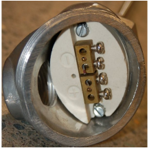
As you can see from this photograph, the screws directly press against the solid metal thermocouple wires to make a firm connection between each wire and the brass terminal block. Since the “head” attaches directly to one end of the thermocouple, the thermocouple's wires will be trimmed just long enough to engage with the terminal screws inside the head. Both brass terminal blocks are mounted on a ceramic base, the purpose of the ceramic being to help equalize the temperatures between the two brass blocks while still maintaining electrical isolation. This assembly is sometimes referred to as an isothermal terminal block because it acts to keep all connection points at a common temperature (“iso-thermal” = “same-temperature”). A threaded cover on the head provides easy access to these connection points for installation and maintenance, while ensuring the connections are covered and protected from ambient weather conditions the rest of the time.
Thermocouple wires are most often manufactured in solid form rather than stranded form. A common mistake made with thermocouple wires is for technicians to crimp compression-style terminals (“lugs”) onto the solid wires. While this may form a usable connection at first, compression-style terminals are simply unable to maintain adequate compression when applied to solid wire of any type, thermocouple wire included. Over time, solid wires will loosen inside compression terminals leading to circuit problems. In the case of a thermocouple circuit, bad wire connections lead to a situation where the receiving instrument “thinks” the thermocouple has failed open. This situation is commonly called burnout, referring to the phenomenon where a thermocouple junction fails open from being “burned out” by excessive temperature.
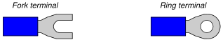
You will most often find compression terminals (improperly) applied to solid thermocouple wire tips where those wires must terminate under the head of a screw. Compression terminals are correct to use in applications where stranded wire terminates at a screw head, but not solid wire. The proper termination technique for solid wire under a screw head is to wrap the solid wire in a semi-circle and directly clamp it under the screw head.
At the other end of the thermocouple, we have a choice of tip styles. For maximum sensitivity and fastest response, the dissimilar-metal junction may be unsheathed (bare). This design, however, makes the thermocouple more fragile. Sheathed tips are typical for industrial applications, available in either grounded or ungrounded forms:
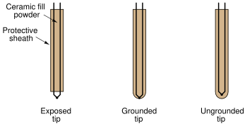
Grounded-tip thermocouples exhibit faster response times1.11 and greater sensitivity than ungrounded-tip thermocouples, but they are vulnerable to ground loops: circuitous paths for electric current between the conductive sheath of the thermocouple and some other point in the thermocouple circuit. In order to avoid this potentially troublesome effect, most industrial thermocouples are of the ungrounded design.
Recall that the amount of voltage indicated by a voltmeter connected to a thermocouple is the difference between the voltage produced by the measurement junction (the point where the two dissimilar metals join at the location we desire to sense temperature at) and the voltage produced by the reference junction (the point where the thermocouple wires join to the voltmeter wires):
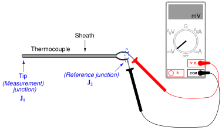
This makes thermocouples inherently differential sensing devices: they generate a measurable voltage in proportion to the difference in temperature between two locations. This inescapable fact of thermocouple circuits complicates the task of interpreting any voltage measurement obtained from a thermocouple.
In order to translate a voltage measurement produced by a voltmeter connected to a thermocouple, we must add the voltage produced by the measurement junction () to the voltage indicated by the voltmeter to find the voltage being produced by the measurement junction (). In other words, we manipulate the previous equation into the following form:
We may ascertain the reference junction voltage by placing a thermometer near that junction (where the thermocouple wire attaches to the voltmeter test leads) and referencing a thermocouple table showing temperatures and corresponding voltages for that thermocouple type. Then, we may take the voltage sum for and re-reference that same table, finding the temperature value corresponding to the calculated measurement junction voltage. The National Institute of Standards and Technology (NIST) in the United States publishes tables showing junction voltages and temperatures for standardized thermocouple types. While it is possible to mathematically model a thermocouple junction's voltage in the same way we may model an RTD's resistance, the functions for thermocouples are less linear than for RTDs, and so tables are greatly preferred for practical use.
To illustrate, suppose we connected a voltmeter to a type K thermocouple and measured 14.30 millivolts. A thermometer situated near the thermocouple wire / voltmeter junction point shows an ambient temperature of 73 degrees Fahrenheit. Referencing a table of voltages for type K thermocouples (in this case, the NIST “ITS-90” reference standard), we see that a type K junction at 73 degrees Fahrenheit corresponds to 0.910 millivolts. Adding this figure to our meter measurement of 14.30 millivolts, we arrive at a sum of 15.21 millivolts for the measurement (“hot”) junction. Going back to the same table of values, we see 15.21 millivolts falls between 701 and 702 degrees Fahrenheit. Linearly interpolating between the table values (15.203 mV at 701 F and 15.226 mV at 702 F), we may more precisely determine the measurement junction to be 701.3 degrees Fahrenheit.
The process of manually taking voltage measurements, referencing a table of millivoltage values, performing addition, then re-referencing the same table is rather tedious. Compensation for the reference junction's inevitable presence in the thermocouple circuit is something we must do, but it is not something that must always be done by a human being. The next subsection discusses ways to automatically compensate for the effect of the reference junction, which is the only practical alternative for continuous thermocouple-based temperature instruments.
Multiple techniques exist to deal with the influence of the reference junction's temperature1.12. One technique is to physically fix the temperature of that junction at some constant value so it is always stable. This way, any changes in measured voltage must be due to changes in temperature at the measurement junction, since the reference junction has been rendered incapable of changing temperature. This may be accomplished by immersing the reference junction in a bath of ice and water, the ice/water mixture ensuring a stable temperature by means of water's latent heat of fusion1.13:
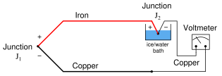
In fact, this is how thermocouple temperature/voltage tables are referenced: describing the amount of voltage produced for given temperatures at the measurement junction with the reference junction held at the freezing point of water (0 C = 32 F). With the reference junction maintained at the freezing point of water, and thermocouple tables referenced to that specific cold junction temperature, the voltmeter's indication will simply and directly correspond to the temperature of measurement junction at all times.
However, fixing the reference junction at the temperature of freezing water is impractical for any real thermocouple application outside of a laboratory. Instead, we need to find some other way to compensate for changes in reference junction temperature, so that we may accurately interpret the temperature of the measurement junction despite random changes in reference junction temperature.
A practical way to compensate for the reference junction voltage is to include an additional voltage source within the thermocouple circuit equal in magnitude and opposite in polarity to the reference junction voltage. If this additional voltage is made continually equal to the reference junction's potential, it will precisely counter the reference junction voltage, resulting in the full (measurement junction) voltage appearing at the measuring instrument terminals. This is called a reference junction compensation or cold junction1.14 compensation circuit:
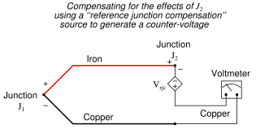
In order for such a compensation strategy to work, the compensating voltage must continuously track the voltage produced by the reference junction. To do this, the compensating voltage source ( in the above schematic) uses some other temperature-sensing device such as a thermistor or RTD to sense the local temperature at the terminal block where junction is formed and produce a counter-voltage that is precisely equal and opposite to 's voltage (
) at all times. Having canceled the effect of the reference junction, the voltmeter now only registers the voltage produced by the measurement junction :
Some instrument manufacturers sell electronic ice point modules designed to provide reference junction compensation for un-compensated instruments such as standard voltmeters. The “ice point” circuit performs the function shown by in the previous diagram: it inserts a counter-acting voltage to cancel the voltage generated by the reference junction, so that the voltmeter only “sees” the measurement junction's voltage. This compensating voltage is maintained at the proper value according to the terminal temperature where the thermocouple wires connect to the ice point module, sensed by a thermistor or RTD:
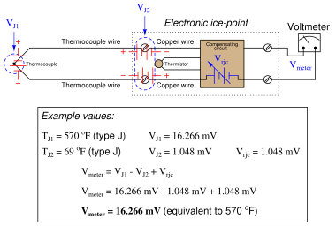
In this example, we see the measurement junction (J1) at a temperature of 570 degrees Fahrenheit, generating a voltage of 16.266 millivolts. If this thermocouple were directly connected to the meter, the meter would only register 15.218 millivolts, because the reference junction (J2, at 69 degrees Fahrenheit) opposes with its own voltage of 1.048 millivolts. With the ice point compensation circuit installed, however, the 1.048 millivolts of the reference junction is canceled by the ice point circuit's equal-and-opposite 1.048 millivolt source. This allows the full 16.266 millivolt signal from the measurement junction reach the voltmeter where it may be read and correlated to temperature by a type J thermocouple table.
At first it may seem pointless to go through the trouble of building a reference junction compensation (ice point) circuit, when doing so requires the use of some other temperature-sensing element such as a thermistor or RTD. After all, why bother to do this just to be able to use a thermocouple to accurately measure temperature, when we could simply use this “other” device to directly measure the process temperature? In other words, isn't the usefulness of a thermocouple invalidated if we must rely on some other type of electrical temperature sensor just to compensate for an idiosyncrasy of the thermocouple?
The answer to this very good question is that thermocouples enjoy certain advantages over these other sensor types. Thermocouples are extremely rugged and have far greater temperature-measurement ranges than thermistors, RTDs, and other primary sensing elements. However, if the application does not demand extreme ruggedness or large measurement ranges, a thermistor or RTD is most likely the better choice!
It is crucial to realize that the phenomenon of a “reference junction” is an inevitable effect of having to close the electric circuit loop in a circuit made of dissimilar metals. This is true regardless of the number of metals involved. In the last example, only two metals were involved: iron and copper. This formed one iron-copper junction () at the measurement end and one iron-copper junction () at the indicator end. Recall that the copper-copper junction was of no consequence because its identical metallic composition generates no thermal voltage:
But what about more complex thermocouple circuits, involving more than two wire types? How do we define what a “reference junction” is, or how it behaves, when we have more than two dissimilar-metal junctions in the same circuit? Take for instance this example of a type J thermocouple:
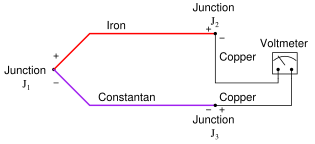
Here we have three voltage-generating junctions: of iron and constantan, of iron and copper, and of copper and constantan1.15. Upon first inspection it would seem we have a much more complex situation than we did with just two metals (iron and copper), but fortunately the situation is just as simple as it was before provided the temperatures of and are equal, which will be true if those two junctions are located very near each other (at the voltmeter).
A principle of thermo-electric circuits called the Law of Intermediate Metals helps us see this clearly. According to this law, intermediate metals in a series of junctions are of no consequence to the overall (net) voltage so long as those intermediate junctions are all at the same temperature. Representing this pictorially, the net effect of having four different metals (A, B, C, and D) joined together in series is the same as just having the first and last metal in that series (A and D) joined with one junction, if all intermediate junctions are at the same temperature:
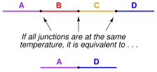
A simple proof of the Law of Intermediate Metals may be built upon the Law of Energy Conservation, one of the most fundamental principles in all of physics. Consider what would happen if we were to join the series of dissimilar metal wires shown above into a continuous loop:
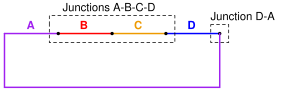
In this diagram we see that the wire made of metal “A” connects to a string of metal junctions formed by metals “B”, “C”, and “D”. If all these dissimilar metal junctions are at the same temperature, there will be no difference of temperature anywhere in the circuit to drive a current, and we would therefore expect the current in this circuit to be zero. This is in accordance with the Law of Energy Conservation, which forbids the passage of electric current through resistive wire without some motive power source driving it. Thus, based on the premise that energy must be conserved (i.e. that an electric current cannot flow through any resistance without a power source), we must conclude that the net effect of all those series-connected metal junctions at the same temperature must be zero. In other words, junctions A-B, B-C, C-D, and D-A all at the same temperature and connected in series must generate zero voltage, as if those junctions were all reduced to a single A-A junction which of course cannot produce any electromotive force (voltage) because it is not comprised of dissimilar metals. If the Law of Intermediate Metals were untrue, it would mean that the junctions A-B-C-D were not equivalent to the single junction A-D, which would mean they would produce a different voltage than the D-A junction at the right-hand end of this circuit (while at the same temperature), and therefore this circuit would produce some net voltage to drive a current continuously through resistive wire in violation of the Law of Energy Conservation. Since we know the Law of Energy Conservation to be well-founded (and we can also build such dissimilar metal loop circuits and empirically determine their currents to be zero), we may rest assured that the Law of Intermediate Metals is true.
In our type J thermocouple circuit where iron and constantan both join to copper, we see copper as an intermediate metal between junctions and . Being located next to each other on the indicating instrument, identical temperature is a reasonable assumption for and , so we may invoke the Law of Intermediate Metals and simply treat junctions and as a single iron-constantan reference junction. In other words, the Law of Intermediate Metals tells us we can treat the following two circuits identically:
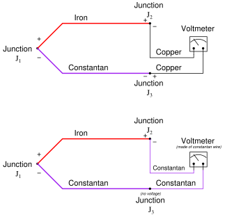
The practical importance of this Law is that we can always treat the reference junction(s) as a single junction made from the same two metal types as the measurement junction, so long as all dissimilar metal junctions at the reference location are at the same temperature.
This fact is extremely important in the age of semiconductor circuitry, where the connection of a thermocouple to an electronic amplifier involves a long series of dissimilar-material junctions. Here we see a multitude of reference junctions, formed by the necessary connections from thermocouple wire to the silicon substrate inside the amplifier chip:
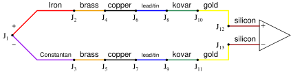
Here we see the metals of the thermocouple wire (type J – iron and constantan) joining to a pair of brass terminal screws, which in turn join to copper traces on a printed circuit board, which join to lead/tin solder, which join to thin wires made of Kovar, which terminate at gold traces on the silicon chip, which are bonded to the silicon itself.
It should be obvious that each complementary junction pair in this series loop cancel each other if each pair is at the same temperature (e.g. gold-silicon junction cancels with silicon-gold junction because they generate the exact same amount of voltage with opposing polarities; Kovar-gold junction cancels with gold-Kovar junction for the same reason; etc.). The Law of Intermediate Metals goes one step further by telling us junctions through taken together in series are of the same effect as a single reference junction of iron and constantan. Automatic reference junction compensation is as simple as counter-acting the voltage produced by this equivalent iron-constantan junction at whatever temperature junctions through happen to be at.
Previously, it was suggested that automatic compensation could be accomplished by intentionally inserting a temperature-dependent voltage source in series with the circuit, oriented in such a way as to oppose the reference junction's voltage:
If the series voltage source is exactly equal in magnitude to the reference junction's voltage (), those two terms cancel out of the equation and lead to the voltmeter measuring only the voltage of the measurement junction :
This technique is known as hardware compensation, and is employed in analog thermocouple temperature transmitter designs. Previously we saw an example of this called an ice point, the purpose of which was to electrically counter the reference junction voltage to render that junction's voltage inconsequential as though that junction were immersed in a bath of ice-water.
A modern technique for reference junction compensation more suitable to digital transmitter designs is called software compensation:
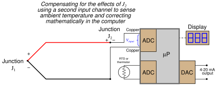
Instead of canceling the effect of the reference junction electrically, we cancel the effect arithmetically inside the microprocessor-based transmitter. In other words, we let the receiving analog-digital converter circuit see the difference in voltage between the measurement and reference junctions (
), but then after digitizing this voltage measurement we have the microprocessor add the equivalent voltage value corresponding to the ambient temperature sensed by the RTD or thermistor ():
Since we know the calculated value of should be equal to the real reference junction voltage (), the result of this digital addition should be a compensated total equal only to the measurement junction voltage :
A block diagram of a thermocouple temperature transmitter with software compensation appears here:
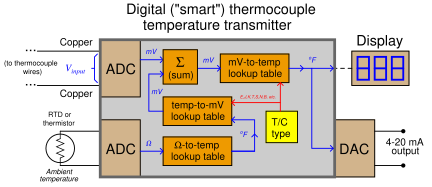
Perhaps the greatest advantage of software compensation is the flexibility to easily switch between different thermocouple types with no hardware modification. So long as the microprocessor memory is programmed with look-up tables relating voltage values to temperature values, it may accurately measure (and compensate for the reference junction of) any thermocouple type. Hardware-based compensation schemes (e.g. an analog “ice point” circuit) require re-wiring or replacement to accommodate different thermocouple types, since each ice-point circuit is built to generate a compensating voltage for a specific type of thermocouple.
In every thermocouple circuit there must be both a measurement junction and a reference junction: this is an inevitable consequence of forming a complete circuit (loop) using dissimilar-metal wires. As we already know, the voltage received by the measuring instrument from a thermocouple will be the difference between the voltages produced by the measurement and reference junctions. Since the purpose of most temperature instruments is to accurately measure temperature at a specific location, the effects of the reference junction's voltage must be “compensated” for by some means, either a special circuit designed to add an additional canceling voltage or by a software algorithm to digitally cancel the reference junction's effect.
In order for reference junction compensation to be effective, the compensation mechanism must “know” the temperature of the reference junction. This fact is so obvious, it hardly requires mentioning. However, what is not so obvious is how easily this compensation may be unintentionally defeated simply by installing a different type of wire in a thermocouple circuit.
To illustrate, let us examine a simple type K thermocouple installation, where the thermocouple connects directly to a panel-mounted temperature indicator by long wires:
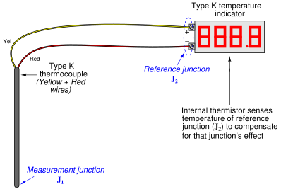
Like all modern thermocouple instruments, the panel-mounted indicator contains its own internal reference junction compensation, so that it is able to compensate for the temperature of the reference junction formed at its connection terminals, where the internal (copper) wires of the indicator join to the chromel and alumel wires of the thermocouple. The indicator senses this junction temperature using a small thermistor thermally bonded to the connection terminals.
Now let us consider the same thermocouple installation with a length of copper cable (two wires) joining the field-mounted thermocouple to the panel-mounted indicator:
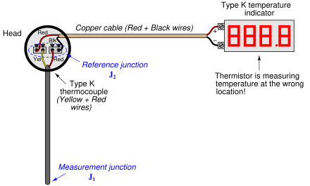
Even though nothing has changed in the thermocouple circuit except for the type of wires joining the thermocouple to the indicator, the reference junction has completely shifted position. What used to be a reference junction (at the indicator's terminals) is no longer, because now we have copper wires joining to copper wires. Where there is no dissimilarity of metals, there can be no thermoelectric potential. At the thermocouple's connection “head,” however we now have a joining of chromel and alumel wires to copper wires, thus forming a reference junction in a new location at the thermocouple head. What is worse, this new location is likely to be at a different temperature than the panel-mounted indicator, which means the indicator's reference junction compensation will be compensating for the wrong temperature.
The only practical way to avoid this problem is to keep the reference junction where it belongs: at the terminals of the panel-mounted instrument where the ambient temperature is measured and the reference junction's effects accurately compensated. If we must install “extension” wire to join a thermocouple to a remotely-located instrument, that wire must be of a type that does not form another dissimilar-metal junction at the thermocouple head, but will form one at the receiving instrument.
An obvious approach is to simply use thermocouple wire of the same type as the installed thermocouple to join the thermocouple to the indicator. For our hypothetical type K thermocouple, this means a type K cable installed between the thermocouple head and the panel-mounted indicator:
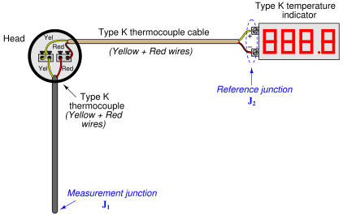
With chromel joining to chromel and alumel joining to alumel at the head, no dissimilar-metal junctions are created at the thermocouple. However, with chromel and alumel joining to copper at the indicator (again), the reference junction has been re-located to its rightful place. This means the thermocouple head's temperature will have no effect on the performance of this measurement system, and the indicator will be able to properly compensate for any ambient temperature changes at the panel as it was designed to do. The only problem with this approach is the potential expense of thermocouple-grade cable. This is especially true with some types of thermocouples, where the metals used are somewhat exotic (e.g. types R, S, and B).
A more economical alternative, however, is to use something called extension-grade wire to make the connection between the thermocouple and the receiving instrument. “Extension-grade” thermocouple wire is made less expensive than full “thermocouple-grade” wire by choosing metal alloys similar in thermo-electrical characteristics to the real thermocouple wires within modest temperature ranges. So long as the temperatures at the thermocouple head and receiving instrument terminals don't get too hot or too cold, the extension wire metals joining to the thermocouple wires and joining to the instrument's copper wires need not be precisely identical to the true thermocouple wire alloys. This allows for a wider selection of metal types, some of which are substantially less expensive than the measurement-grade thermocouple alloys. Also, extension-grade wire may use insulation with a narrower temperature rating than thermocouple-grade wire, reducing cost even further.
An interesting historical reference to the use of extension-grade wire appears in Charles Robert Darling's 1911 text Pyrometry – A Practical Treatise on the Measurement of High Temperatures. On page 61, Darling describes “compensating leads” marketed under the brand-name of Peake designed to be used with platinum-alloy thermocouples. These “compensating” wires were made of two different copper-nickel alloys, each copper-nickel alloy matched with the respective thermocouple metal (in this case, pure platinum and a 90%-10% platinum-iridium alloy) to generate an equal and opposite millivoltage at any reasonable temperature found at the thermocouple head. Thus, the only reference junction in the thermocouple circuit is where these copper-nickel extension wires joined with the indicating instrument, rather than being located at the thermocouple head as it would be if simple copper extension wires were employed. With platinum being such an expensive metal (both then and now!), the cost savings realized by being able to use cheaper extension wire to connect the platinum thermocouple to a distant receiving instrument is significant.
Extension-grade cable is denoted by a letter “X” following the thermocouple letter. For our hypothetical type K thermocouple system, this would mean type “KX” extension cable:
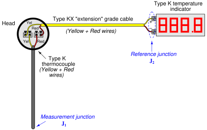
Thermocouple extension cable also differs from thermocouple-grade (measurement) cable in the coloring of its outer jacket. Whereas thermocouple-grade cable is typically1.16 brown in exterior color, extension-grade cable is usually colored1.17 to match the thermocouple plug (yellow for type K, black for type J, blue for type T, etc.).
Reference junction compensation is a necessary part of any precision thermocouple circuit, due to the inescapable fact of the reference junction's existence. When you form a complete circuit of dissimilar metals, you will form both a measurement junction and a reference junction, with those two junctions' polarities opposed to one another. This is why reference junction compensation – whether it takes the form of a hardware circuit or an algorithm in software – must exist within every precision thermocouple instrument.
The presence of reference junction compensation in every precision thermocouple instrument results in an interesting phenomenon: if you directly short-circuit the thermocouple input terminals of such an instrument, it will always register ambient temperature, regardless of the thermocouple type the instrument is built or configured for. This behavior may be illustrated by example, first showing a normal operating temperature measurement system and then with that same system short-circuited. Here we see a temperature indicator receiving a 4-20 mA current signal from a temperature transmitter, which is receiving a millivoltage signal from a type “K” thermocouple sensing a process temperature of 780 degrees Fahrenheit:
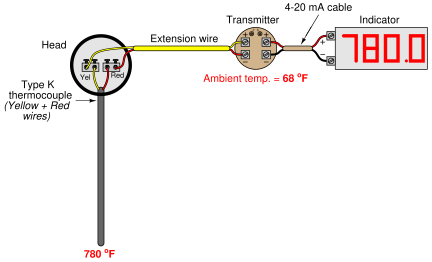
The transmitter's internal reference junction compensation feature compensates for the ambient temperature of 68 degrees Fahrenheit. If the ambient temperature rises or falls, the compensation will automatically adjust for the change in reference junction potential, such that the output will still register the process (measurement junction) temperature of 780 degrees F. This is what the reference junction compensation is designed to do.
Now, we disconnect the thermocouple from the temperature transmitter and short-circuit the transmitter's input:
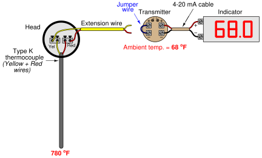
With the input short-circuited, the transmitter “sees” no voltage at all from the thermocouple circuit. There is no measurement junction nor a reference junction to compensate for, just a piece of wire making both input terminals electrically common. This means the reference junction compensation inside the transmitter no longer performs a useful function. However, the transmitter does not “know” it is no longer connected to the thermocouple, so the compensation keeps on working even though it has nothing to compensate for. Recall the voltage equation relating measurement, reference, and compensation voltages in a hardware-compensated thermocouple instrument:
Disconnecting the thermocouple wire and connecting a shorting jumper to the instrument eliminates the and terms, leaving only the compensation voltage to be read by the meter1.18:
This is why the instrument registers the equivalent temperature created by the reference junction compensation feature: this is the only signal it “sees” with its input short-circuited. This phenomenon is true regardless of which thermocouple type the instrument is configured for, which makes it a convenient “quick test” of instrument function in the field. If a technician short-circuits the input terminals of any thermocouple instrument, it should respond as though it is sensing ambient temperature.
While this interesting trait is a somewhat useful side-effect of reference junction compensation in thermocouple instruments, there are other effects that are not quite so useful. The presence of reference junction compensation becomes quite troublesome, for example, if one tries to simulate a thermocouple using a precision millivoltage source. Simply setting the millivoltage source to the value corresponding to the desired (simulation) temperature given in a thermocouple table will yield an incorrect result for any ambient temperature other than the freezing point of water!
Suppose, for example, a technician wished to simulate a type K thermocouple at 300 degrees Fahrenheit by setting a millivolt source to 6.094 millivolts (the voltage corresponding to 300 F for type K thermocouples according to the ITS-90 standard). Connecting the millivolt source to the instrument will not result in an instrument response appropriate for 300 degrees F:
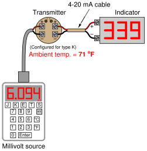
Instead, the instrument registers 339 degrees because its internal reference junction compensation feature is still active, compensating for a reference junction voltage that no longer exists. The millivolt source's output of 6.094 mV gets added to the compensation voltage (inside the transmitter) of 0.865 mV – the necessary millivolt value to compensate for a type K reference junction at 71 F – with the result being a larger millivoltage (6.959 mV) interpreted by the transmitter as a temperature of 339 F.
One way to use a millivoltage source to simulate a desired temperature is for the instrument technician to “out-think” the transmitter's compensation feature by specifying a millivolt signal that is offset by the amount of equivalent voltage generated by the transmitter's compensation. In other words, instead of setting the millivolt source to a value of 6.094 mV, the technician should set the source to only 5.229 mV so the transmitter's compensation will add 0.865 mV to this value to arrive at 6.094 mV and properly register as 300 degrees Fahrenheit:
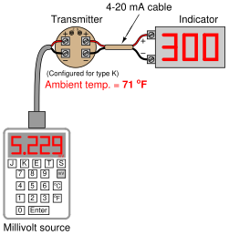
Years ago, the only suitable piece of test equipment available for generating the precise millivoltage signals necessary to calibrate thermocouple instruments was a device called a precision potentiometer. These “potentiometers” used a stable mercury cell battery (sometimes called a standard cell) as a voltage reference and a potentiometer with a calibrated knob to output low-voltage signals. Photographs of two vintage precision potentiometers are shown here:
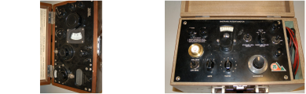
Of course, modern thermocouple calibrators also provide direct entry of temperature and automatic compensation to “un-compensate” the transmitter such that any desired temperature may be easily simulated:
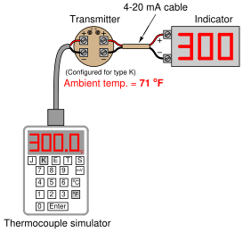
In this example, when the technician sets the calibrator for 300 F (type K), it measures the ambient temperature and automatically subtracts 0.865 mV from the output signal, so only 5.229 mV is sent to the transmitter terminals instead of the full 6.094 mV. The transmitter's internal reference junction compensation adds the 0.865 mV offset value (thinking it must compensate for a reference junction that in reality is not there) and “sees” a total signal voltage of 6.094 mV, interpreting this properly as 300 degrees Fahrenheit.
The following photograph shows the display of a modern thermocouple calibration device (a Fluke model 744 documenting process calibrator) being used to generate a thermocouple signal. In this particular example, the thermocouple type is set to type “S” (Platinum-Rhodium/Platinum) at a temperature of 2650 degrees Fahrenheit:
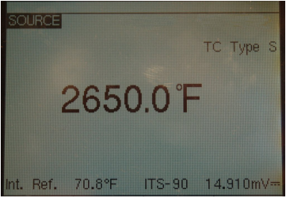
The ITS-90 thermocouple standard declares a millivoltage signal value of 15.032 mV for a type S thermocouple junction at 2650 degrees F (with a reference junction temperature of 32 degrees F). Note how the calibrator does not output 15.032 mV even though the simulated temperature has been set to 2650 degrees F. Instead, it outputs 14.910 mV, which is 0.122 mV less than 15.032 mV. This offset of 0.122 mV corresponds to the calibrator's local temperature of 70.8 degrees F (according to the ITS-90 standard for type S thermocouples).
When the calibrator's 14.910 mV signal reaches the thermocouple instrument being calibrated (be it an indicator, transmitter, or even a controller equipped with a type S thermocouple input), the instrument's own internal reference junction compensation will add 0.122 mV to the received signal of 14.910 mV, “thinking” it needs to compensate for a real reference junction. The result will be a perceived measurement junction signal of 15.032 mV, which is exactly what we want the instrument to “think” it sees if our goal is to simulate connection to a real type S thermocouple at a temperature of 2650 degrees F.
Another consideration for thermocouples is burnout detection. The most common failure mode for thermocouples is to fail open, otherwise known as “burning out.” An open thermocouple is problematic for any voltage-measuring instrument with high input impedance because the lack of a complete circuit on the input makes it possible for electrical noise from surrounding sources (power lines, electric motors, variable-frequency motor drives) to be detected by the instrument and falsely interpreted as a wildly varying temperature.
For this reason it is prudent to design into the thermocouple instrument some provision for generating a consistent state in the absence of a complete circuit. This is called the burnout mode of a thermocouple instrument. A simple thermocouple circuit equipped with burnout detection is shown in this diagram:
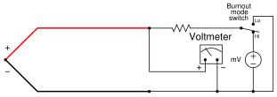
The resistor in this circuit provides a connection to a stable voltage1.19 in the event of an open thermocouple. It is sized in the mega-ohm range to minimize its effect during normal operation when the thermocouple circuit is complete. Only when the thermocouple fails open will the miniscule current through the resistor have any substantial effect on the voltmeter's indication. The SPDT switch provides a selectable burnout mode: in the event of a burnt-out thermocouple, we can configure the meter to either read high temperature (sourced by the instrument's internal milli-voltage source) or low temperature (grounded), depending on what failure mode we deem safest1.20 for the application.
Virtually any mass above absolute zero temperature emits electromagnetic radiation (photons, or light) as a function of that temperature. This basic fact makes possible the measurement of temperature by analyzing the light emitted by an object. The Stefan-Boltzmann Law of radiated energy quantifies this fact, declaring that the rate of heat lost by radiant emission from a hot object is proportional to the fourth power of the absolute temperature:
Where,
= Radiant heat loss rate (watts)
= Emissivity factor (unitless)
= Stefan-Boltzmann constant (5.67 W / m K)
= Surface area (square meters)
= Absolute temperature (Kelvin)
The primary advantage of non-contact thermometry (or pyrometry as high-temperature measurement is often referred) is rather obvious: with no need to place a sensor in direct contact with the process, a wide variety of temperature measurements may be made that are either impractical or impossible to make using any other technology.
A major disadvantage of non-contact thermometry is that it only reveals the surface temperature of an object. Sensing the thermal radiation emanated from a pipe, for instance, only tells you the surface temperature of that pipe and not the true temperature of the fluid within the pipe. Another example is when doctors use non-contact thermometry to assess irregularities in body temperature: what they detect is just skin temperature. While it may be true that “hot spots” beneath the surface of an object may be detectable this way, it is only because the surface temperature of that object differs as a consequence of the hot spot(s) beneath. If a hotter-than-normal region inside of an object fails to transfer enough thermal energy to the surface to manifest as a hotter surface temperature, that region will be invisible to non-contact thermometry.
It may surprise some readers to discover that non-contact pyrometry is nearly as old as thermocouple technology1.21, the first non-contact pyrometer being constructed in 1892.
A time-honored design for non-contact pyrometers is to concentrate1.22 incident light from the surface of a heated object onto a small temperature-sensing element. A rise in temperature at the sensor reveals the intensity of the infrared optical energy falling upon it, which as discussed previously is a function of the target object's surface temperature (absolute temperature to the fourth power):
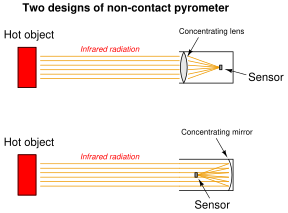
The fourth-power characteristic of Stefan-Boltzmann's law means that a doubling of absolute temperature at the hot object results in sixteen times as much radiant energy falling on the sensor, and therefore a sixteen-fold increase in the sensor's temperature rise over ambient. A tripling of target temperature (absolute) yields eighty one times as much radiant energy, and therefore an 81-fold increase in sensor temperature rise. This extreme nonlinearity limits the practical application of non-contact pyrometry to relatively narrow ranges of target temperature wherever good accuracy is required.
Thermocouples were the first type of sensor used in non-contact pyrometers, and they still find application in modern versions of the same technology. Since the sensor does not become nearly as hot as the target object, the output of any single thermocouple junction at the sensor area will be quite small. For this reason, instrument manufacturers often employ a series-connected array of thermocouples called a thermopile to generate a stronger electrical signal.
The basic concept of a thermopile is to connect multiple thermocouple junctions in series so their voltages will add:
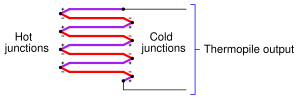
Examining the polarity marks of each junction (type E thermocouple wires are assumed in this example: chromel and constantan), we see that all the “hot” junctions' voltages aid each other, as do all the “cold” junctions' voltages. Like all thermocouple circuits, though, the each “cold” junction voltage opposes each the “hot” junction voltage. The example thermopile shown in this diagram, with four hot junctions and four cold junctions, will generate four times the potential difference that a single type E thermocouple hot/cold junction pair would generate, assuming all the hot junctions are at the same temperature and all the cold junctions are at the same temperature.
When used as the detector for a non-contact pyrometer, the thermopile is oriented so all the concentrated light falls on the hot junctions (the “focal point” where the light focuses to a small spot), while the cold junctions face away from the focal point to a region of ambient temperature. Thus, the thermopile acts like a multiplied thermocouple, generating more voltage than a single thermocouple junction could under the same temperature conditions.
A popular design of non-contact pyrometer manufactured for years by Honeywell was the Radiamatic1.23, using ten thermocouple junction pairs arrayed in a circle. All the “hot” junctions were placed at the center of this circle where the focal point of the concentrated light fell, while all the “cold” junctions were situated around the circumference of the circle away from the heat of the focal point. A table of values showing the approximate relationship between target temperature and millivolt output for one model of Radiamatic sensing unit reveals the fourth-power function:
We may test the basic1.24 validity of the Stefan-Boltzmann law by finding the ratio of temperatures for any two temperature values in this table, raising that ratio to the fourth power, and seeing if the millivolt output signals for those same two temperatures match the new ratio. The operating theory here is that increases in target temperature will produce fourth-power increases in sensor temperature rise, since the sensor's temperature rise should be a direct function of radiation power impinging on it.
For example, if we were to take 4144 K and 3033 K as our two test temperatures, we find that the ratio of these two temperature values is 1.3663. Raising this ratio to the fourth power gives us 3.485 for a predicted ratio of millivolt values. Multiplying the 3033 K millivoltage value of 9.9 mV by 3.485 gives us 34.5 mV, which is quite close to the value of 34.8 mV advertised by Honeywell:
If accuracy is not terribly important, and if the range of measured temperatures for the process is modest, we may take the millivoltage output of such a sensor and interpret it linearly. When used in this fashion, a non-contact pyrometer is often referred to as an infrared thermocouple, with the output voltage intended to connect directly to a thermocouple-input instrument such as an indicator, transmitter, recorder, or controller. An example of this usage is the OS-36 line of infrared thermocouples manufactured by Omega.
Infrared thermocouples are manufactured for a narrow range of temperature (most OS-36 models limited to a calibration span of 100 F or less), their thermopiles designed to produce millivolt signals corresponding to a standard thermocouple type (T, J, K, etc.) over that narrow range.
An interesting and useful characteristic of non-contact pyrometers is that their calibration does not depend on the distance separating the sensor from the target object's surface1.25. This is counter-intuitive to anyone who has ever stood near an intense radiative heat source: standing in close proximity to a bonfire, for example, results in much hotter skin temperature than standing far away from it. Why wouldn't a non-contact pyrometer register cooler target temperatures when it was far away, given the fact that infrared radiation from the object spreads out with increased separation distance? The fact that an infrared pyrometer does not suffer from this limitation is good for our purposes in measuring temperature, but it doesn't seem to make sense at first.
One key to understanding this paradox is to quantify the bonfire experience, where perceived temperature falls off with increased distance. In physics, this is known as the inverse square law: the intensity of radiation falling on an object from a point-source decreases with the square of the distance separating the radiation source from the object. Backing away to twice the distance from a bonfire results in a four-fold decrease in received infrared radiation; backing way to three times the distance results in a nine-fold decrease in received radiation.
Placing a sensor at three integer distances (, , and ) from a radiation point-source results in relative power levels of 100%, 25% (one-quarter), and 11.1% (one-ninth) falling upon the sensor at those locations, respectively:
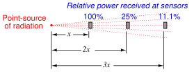
This is a basic physical principle for all kinds of radiation, grounded in simple geometry. If we examine the radiation flux emanating from a point-source, we find that it must spread out as it travels in straight lines, and that the spreading-out happens at a rate defined by the square of the distance. An analogy for this phenomenon is to imagine a spherical latex balloon expanding as air is blown into it. The surface area of the balloon is proportional to the square of its radius. Likewise, the radiation flux emanating from a point-source spreads out in straight lines, in all directions, reaching a total area proportional to the square of the distance from the point (center). The total flux measured as a sphere will be the same no matter what the distance from the point-source, but the area it is divided over increases with the square of the distance, and so any object of fixed area backing away from a point-source of radiation encounters a smaller and smaller fraction of that flux.
If non-contact pyrometers really were “looking” at a point-source of infrared radiation, their signals would indeed decrease with distance. The saving grace here is that non-contact pyrometers are focused-optic devices, with a definite field of view, and that field of view should always be completely filled by the target object (assumed to be at a uniform temperature). As distance between the pyrometer and the target object changes, the cone-shaped field of view covers a surface area on that object proportional to the square of the distance1.26 Backing the pyrometer away to twice the distance increases the viewing area on the target object by a factor of four; backing away to three times the distance increases the viewing area nine times:
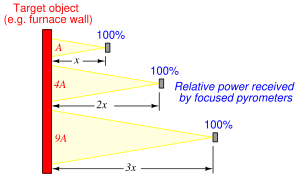
So, even though the inverse square law correctly declares that radiation emanating from the hot wall (which may be thought of as a collection of point-sources) decreases in intensity with the square of the distance, this attenuation is perfectly balanced by an increased viewing area of the pyrometer. Doubling the separation distance does result in the flux from any given point on the wall spreading out by a factor of four, but the pyrometer now sees four times as many similar points on the wall as it did previously. So long as all the points within the field of view are uniform in temperature, the result is a perfect cancellation with the pyrometer providing the exact same temperature measurement at any distance from the target.
If the sensor's field of view expands far enough to capture objects other than the one whose temperature we intend to measure, measurement errors will result. The sensor will now yield a weighted average of all objects within its field of view, and so it is important to ensure that field is limited to cover just the object we intend to measure.
Non-contact sensor fields-of-view are typically specified either as an angle, as a distance ratio, or both. For example, the following illustration shows a non-contact temperature sensor with a 5:1 (approximately 11) field of view:
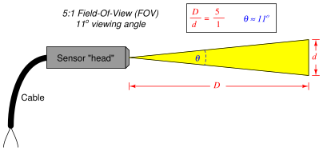
The mathematical relationship between viewing angle () and distance ratio () follows the tangent function:
A sampling of common field-of-view distance ratios and approximate viewing angles appears in this table:
A trigonometric explanation for these equations is shown in the following diagram, where the isosceles field-of-vision triangle is split into two “right” triangles, each one having an adjacent side length of and an opposite side length of for angle :
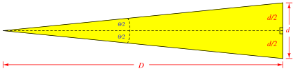
Since we know the tangent function is the ratio of opposite to adjacent side lengths for a right triangle, this means the tangent of the half-angle () will be equal to the ratio of the opposite side length () to the adjacent side length ():
Solving for the length ratio is now just a matter of algebraically manipulating this equation:
Solving for the viewing angle () requires another form of manipulation on the basic tangent equation, where we “un-do” the tangent function by using the inverse tangent (or “arctangent”) function:
Aside from their inherent nonlinearity, perhaps the main disadvantage of non-contact temperature sensors is their inaccuracy. The emissivity factor () in the Stefan-Boltzmann equation varies with the composition of a substance, but beyond that there are several other factors (surface finish, shape, etc.) that affect the amount of radiation a sensor will receive from an object. For this reason, emissivity is not a very practical way to gauge the effectiveness of a non-contact pyrometer. Instead, a more comprehensive measure of an object's “thermal-optical measureability” is emittance.
A perfect emitter of thermal radiation is known as a blackbody. Emittance for a blackbody is unity (1), while emittance figures for any real object is a value between 1 and 0. The only certain way to know the emittance of an object is to test that object's thermal radiation at a known temperature. This assumes we have the ability to measure that object's temperature by direct contact, which of course renders void one of the major purposes of non-contact thermometry: to be able to measure an object's temperature without having to touch it. Not all hope is lost, though: all we have to do is obtain an emittance value for that object one time, and then we may calibrate any non-contact pyrometer for that object's particular emittance so as to measure its temperature in the future without contact.
Beyond the issue of emittance, other idiosyncrasies plague non-contact pyrometers. Objects also have the ability to reflect and transmit radiation from other bodies, which taints the accuracy of any non-contact device sensing the radiation from that body. An example of the former is trying to measure the temperature of a silver mirror using an optical pyrometer: the radiation received by the pyrometer is mostly from other objects, merely reflected by the mirror. An example of the latter is trying to measure the temperature of a gas or a clear liquid, and instead primarily measuring the temperature of a solid object in the background (through the gas or liquid).
Nevertheless, non-contact pyrometers have been and will continue to be useful in specific applications where other, contact-based temperature measurement techniques are impractical.
A very useful application of non-contact sensor technology is thermal imaging, where a dense array of infrared radiation sensors provides a graphic display of objects in its view according to their temperatures. Each object shown on the digital display of a thermal imager is artificially colored in the display on a chromatic scale that varies with temperature, hot objects typically registering as red tones and cold objects typically registering as blue tones. Thermal imaging is very useful in the electric power distribution industry, where technicians may inspect power line insulators and other objects at elevated potential for “hot spots” without having to make physical contact with those objects. Thermal imaging is also useful in performing “energy audits” of buildings and other heated structures, providing a means of revealing points of heat escape through walls, windows, and roofs. In such applications, relative differences in temperature are often more important to detect than specific temperature values. “Hot spots” readily appear on a thermal imager display, and may give useful data on the test subject even in the absence of accurate temperature measurement at any one spot.
Again, it is important to stress that thermal imaging only provides an assessment of the object's surface temperature, and not the temperature within that object. Variations in surface temperature detectable by thermal imaging are a secondary effect of temperature variations within the object, and as such may not accurately depict the true thermal gradient(s) within the object.
A digital image taken with a thermal imaging instrument by maintenance personnel at a municipal water treatment facility shows “hot spots” on an electric motor. A color scale on the right-hand side of the image serves as a “legend” for interpreting color as temperature. In this particular shot, dark blue is 68.1 F and white is 152 F:
This particular electric motor is in a vertical orientation, with the electrical connection box in the upper-left corner and two prominent hot spots on both the near and the left-facing sides of the case. A manual valve handle appears in the foreground, silhouetted in dark blue against a lighter blue (warmer) background. A lifting “eye” on the motor case appears as a green (cooler) shape in the middle of a white (warmer) area. The two “hot spots” correspond directly to stator windings and magnetic pole faces inside the motor, which are close enough to the motor's casing to cause variations in surface temperature.
Thermal imaging is particularly useful for detecting hot spots on equipment unsafe to directly touch, as is the case with many “live” electrical components. This next thermal image shows an operating three-phase motor starter (contactor and overload block):
The bright spot in the center of the contactor is the higher temperature of the electromagnetic coil, providing magnetic force to actuate the contactor mechanism. Perhaps the most telling detail of this thermal image, however, is the difference in temperature between the overload heater connections (the six screws located near the bottom of the starter assembly). Note how the middle heater's screws register slightly higher temperatures than the screws on either of the other two heater elements. Large temperature differences may indicate poor electrical connections (i.e. greater resistance) at the hot spots, or imbalances in phase current. It is also possible that the elevated temperature of this particular overload heater is simply due to it having less open surface area for it to radiate heat, since the two overload heaters flanking it enjoy the advantage of having more air cooling. If three people pack themselves into a narrow bench seat, the middle person is going to be warmer than either of the outer two!
Another noteworthy detail in this image is the “Spot Difference” measurement provided by the thermal imager. A cross-hair cursor on the display serves to locate a particular spot in the image, which in this case is contrasted against a reference spot chosen in an earlier step. The instrument automatically subtracts the current and reference spot temperatures to give a indication, in this particular case 84.7 F.
A thermal image of a three-phase circuit breaker shows a much more even distribution of temperature:
The hottest objects in this image are the three load screw terminals, appearing as white/red against a blue/green background. Note the range of the temperature scale on the right of the image: this particular image only spans a temperature range of 61.3 F to 68.6 F. This narrow temperature range tells us the differences in temperature shown by colors in this image are nothing to worry about.
Here, the instrument provides a single-point temperature measurement of 68.4 F at the cursor (“Spot”) location rather than a differential temperature measurement between two points.
One of the most important accessories for any temperature-sensing element is a pressure-tight sheath known as a thermowell. This may be thought of as a thermally conductive protrusion into a process vessel or pipe1.27 allowing a temperature-sensitive instrument to detect process temperature without opening a hole in the vessel or pipe. Thermowells are critically important for installations where the temperature element (RTD, thermocouple, thermometer, etc.) must be replaceable without de-pressurizing the process.
Thermowells may be made out of any material that is thermally conductive, pressure-tight, and not chemically reactive with the process. Most thermowells are formed out of either metal (stainless steel or other alloy) or ceramic materials. A simple diagram showing a thermowell in use with a temperature gauge is shown here:
If the temperature gauge is removed for maintenance or replacement, the thermowell maintains pressure integrity of the pipe (no process fluid leaking out, and no air leaking in):
Photographs of a real (stainless steel) thermowell are shown here, the left-hand photo showing the entire length of the thermowell, and the right-hand photo showing the end where the temperature-sensing device is inserted:
A photo of a complete RTD assembly (connection head, RTD, and thermowell) appears in the next photograph:
Another photo shows an RTD installed in a thermowell on the side of a commercial freezer, using a Rosemount model 3044C temperature transmitter to output a 4-20 mA signal to an operator display:
As useful as thermowells are, they are not without their caveats. All thermowells, no matter how well they may be installed, increase the first-order time lag of the temperature sensor by virtue of their mass and specific heat value. It should be intuitively obvious that a few pounds of metal will not heat up and cool down as fast as a few ounces' worth of RTD or thermocouple, and therefore the addition of a thermowell to the sensing element will decrease the responsiveness of any temperature-sensing element. What is not so obvious is that such time lags, if severe enough, may compromise the stability of feedback control. A control system receiving a “delayed” temperature measurement will not see the live temperature of the process in real time due to this lag.
A potential problem with thermowells is incorrect installation of the temperature-sensing element. The element must be inserted with full contact at the bottom of the thermowell's blind hole. If any air gap is allowed to exist between the end of the temperature element and the bottom of the thermowell's hole, this will add a second time lag to the measurement system1.28. Some thermowells include a spring clip in the bottom of the blind hole to help maintain constant metal-to-metal contact between the sensing element and the thermowell wall.
The primary consideration for selecting a proper temperature sensing element for any application is the expected temperature range. Mechanical (bi-metal) and filled-system temperature sensors are limited to relatively low process temperatures, and cannot relay signals very far from the point of measurement.
Thermocouples are by far the most rugged and wide-ranging of the contact-type temperature sensors. Accuracies vary with thermocouple type and installation quality.
RTDs are more fragile than thermocouples, but they require no reference compensation and are inherently more linear.
Optical sensors lack the ability to measure temperature of fluids inside vessels unless a transparent window is provided in the vessel for light emissions to reach the sensor. Otherwise, the best an optical sensor can do is report the skin temperature of a vessel. For monitoring surface temperatures of solid objects, especially objects that would be impractical or even dangerous to contact (e.g. electrical insulators on high-voltage power lines), optical sensors are the only appropriate solution.
Chemical reactivity is a concern for contact-type sensors. If the sensing element is held inside a thermowell, that thermowell must be selected for minimum reaction with the process fluid(s). Bare thermocouples are particularly vulnerable to chemical reactions given the nature of most thermocouple metals (iron, nickel, copper, etc.), and must be carefully chosen for the particular process chemistry to avoid reliability problems later.
Shown here is a partial listing of principles applied in the subject matter of this chapter, given for the purpose of expanding the reader's view of this chapter's concepts and of their general inter-relationships with concepts elsewhere in the book. Your abilities as a problem-solver and as a life-long learner will be greatly enhanced by mastering the applications of these principles to a wide variety of topics, the more varied the better.
Kirchhoff's Voltage Law: the algebraic sum of all voltages in a loop is equal to zero. Relevant to thermocouple circuit calculations, where the reference junction voltage always opposes the measurement junction voltage. Also relevant to RTD circuits when determining the amount of voltage sensed by the instrument compared to the amount of voltage dropped by the RTD resistance element.
Ideal Gas Law: , describing the relationship between gas pressure, chamber volume, gas quantity (in moles), and gas temperature. Relevant to Class III filled-bulb temperature sensors, where the increased pressure of an enclosed gas corresponds to the temperature of that gas.
Self-balancing opamp circuits: all self-balancing operational amplifier circuits work on the principle of negative feedback maintaining a nearly zero differential input voltage to the opamp. Making the “simplifying assumption” that the opamp's differential input voltage is exactly zero assists in circuit analysis, as does the assumption that the input terminals draw negligible current.
Stefan-Boltzmann Law:
, that all objects warmer than absolute zero radiate thermal energy (photons). Relevant to non-contact pyrometry, where the intensity of the received radiation is proportional to the fourth power of the object's absolute temperature.
Time constant: (), defined as the amount of time it takes a system to change 63.2% of the way from where it began to where it will eventually stabilize. The system will be within 1% of its final value after 5 time constants' worth of time has passed (). Relevant to temperature lags caused by sensor mass and thermowells.
Inverse square law: the strength of a field radiating away from a point-source diminishes proportionately to the square of the distance from the source. Relevant to determining the amount of radiant energy intercepted by a sensor when monitoring a point-source of heat.
 )
)